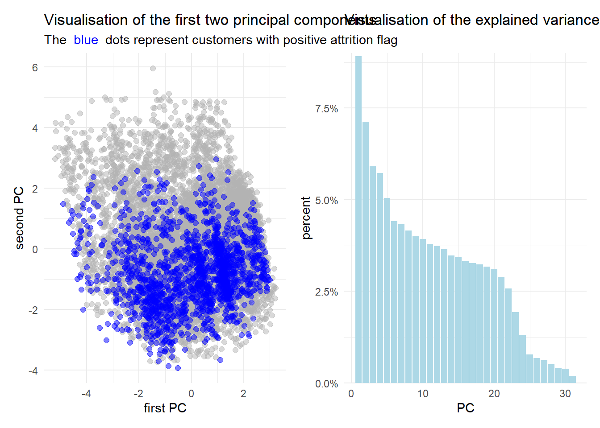
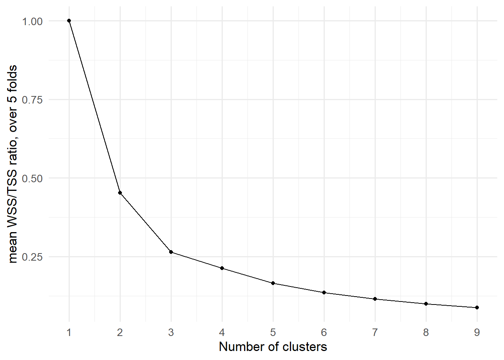
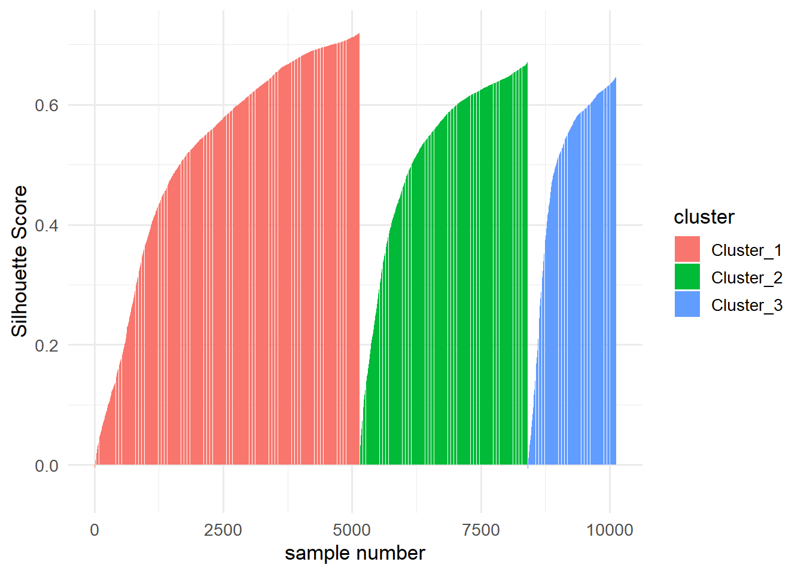
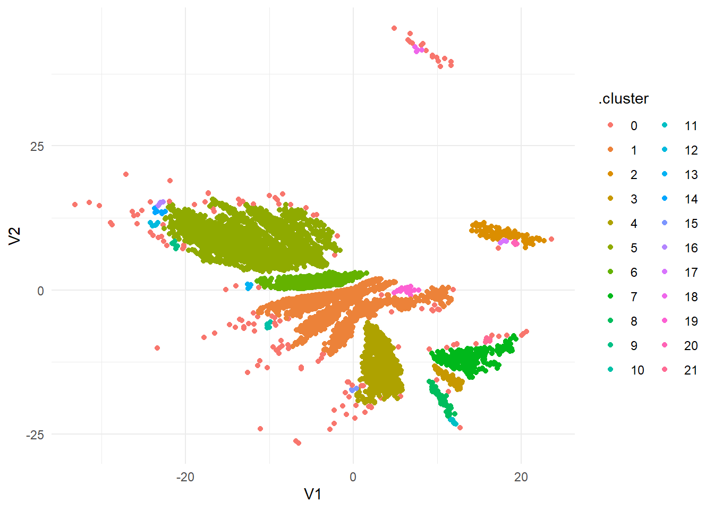
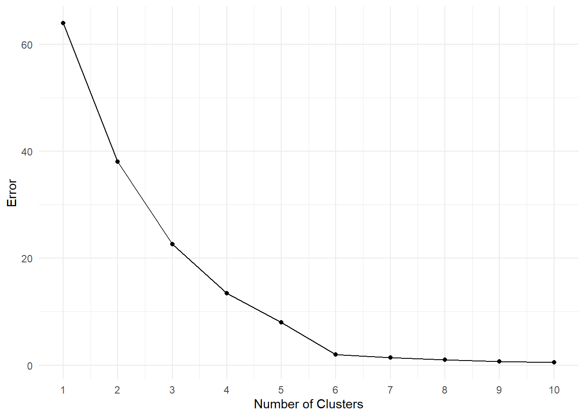
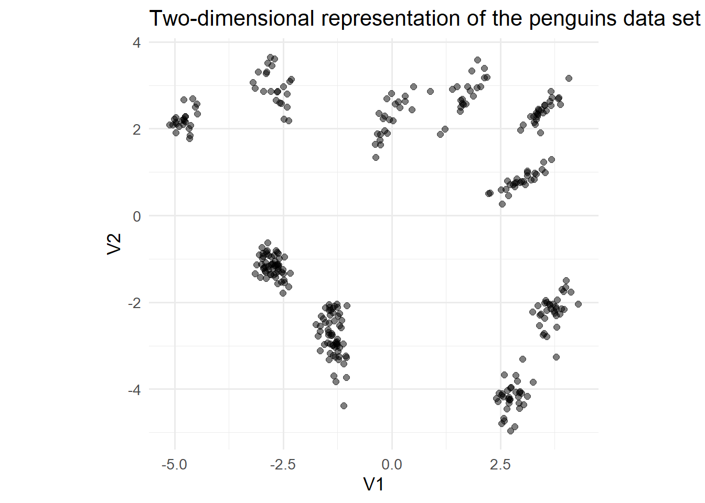
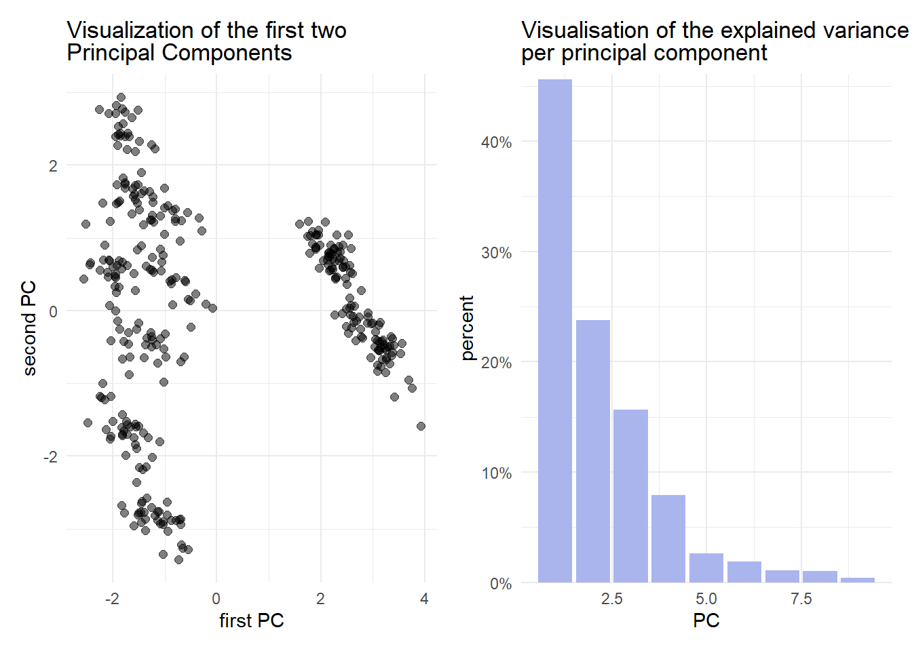

library(tidyverse)
library(tidymodels)
library(tensorflow)
library(keras)
library(ggtext)
library(patchwork)10 Unsupervised Learning
10.1 Introduction
In this last exercise session, we will consider a major subfield of machine learning: unsupervised learning. In particular, we will consider clustering with hierarchical methods, the k-means algorithm, and dbscan. Besides unsupervised learning, we will also consider dimension reduction algorithms such as principal component analysis and autoencoders.
10.1.1 Dimension reduction
Many of the data sets we encountered so far have a dimension \(\gg 2\). We can therefore not directly visualize all features and the response variable in one figure. One solution is to build a facet plot (similar to Exercise 1.15) that displays every possible combination of variables. However, this is increasingly difficult: Consider the Credit Info data set we frequently use. There are \(n=10\) variables we usually use and to display every variable combination, \(\begin{pmatrix} 10 \\ 2\end{pmatrix} = 45\) subplots would be required. The idea of dimension reduction aims to solve this problem. Instead of considering every feature individually, dimension reduction usually merges feature values based on some rule set. Principal component analysis combines features linearly in a way that the resulting linear combinations explain most of the variability in the data set. Autoencoders on the other hand aim to map the features into a lower dimensional subspace (latent space) and rebuild the true features based on the features in the latent space.
10.1.1.1 Principal Component Analysis (PCA)
Heuristically speaking, PCA assumes that in a \(n\) dimensional (feature) space, not every variable is equally important in terms of variability. Consider a feature matrix \(X\in\mathbb{R}^{n\times p}\) (\(p\) features and \(n\) observations) with normalized features. To find the features that explain the most variance, the following steps are performed:
- Center the features such that \(\mathbb{E}(X_j) = \frac{1}{n}\sum_{i=1}^n x_{ij} = 0\) for \(j=1,...,p\).
- Calculate the empirical covariance matrix \(X^\prime X =: \Sigma\in\mathbb{R}^{p\times p}\) that measures the joint variability of each pair of features.
- Calculate the singular value decomposition of \(\Sigma\):
- Solve the system \(\mathrm{det}(\Sigma - \lambda I_p)= 0\) where \[\begin{align} I_p &= \begin{pmatrix} 1 & 0 & ... & 0\\ 0 & 1 & ... & 0\\ \vdots & \vdots & \ddots & \vdots \\ 0 & 0 & ... & 1 \end{pmatrix} \in \mathbb{R}^{p\times p} \text{ and}\\ \lambda &\in\mathbb{R}. \end{align}\] for \(\lambda\). Here, we assume that there are \(p\) distinct solutions.
- Reorder the solutions \(\lambda_j,\, j=1,...,p\) descending such that \(\lambda_{(1)}\geq...\geq \lambda_{(q)}\).
- For each ordered solution \(\lambda_{(j)},\, j=1,...,p\) that solves \(\mathrm{det}(\Sigma - \lambda I_p)= 0\), solve the system \[\begin{align} (\Sigma - \lambda_{(j)} I_p)\gamma_{(j)} = 0, \end{align}\] where \(\gamma_{(j)} \in \mathbb{R}^p\) for \(j=1,...,p\).
- Normalize the resulting vectors to obtain the principal components of the data. Note, that the normalizing constant of each vector \(\gamma_{(j)}\) is given by \(\frac{1}{\|\gamma_{(j)}\|}\).
10.1.1.2 PCA in R
We will need the following libraries throughout the session:
Let us consider the Bank Churners or Credit Info data set that we already used in previous exercises. You can either download it again using the provided link or the button below.
Recall that the data set consists of 10,127 entries that represent individual customers of a bank including but not limited to their age, salary, credit card limit, and credit card category.
The goal is to reduce the dimensionality of the data set while leaving out the variable Attrition_Flag. By doing so, we might be able to get a better intuition on the distribution of attrited customers within the reduced data set.
The following code snippet takes care of the pre processing:
credit_info <- read.csv("data/BankChurners.csv")
credit_info <- credit_info %>% select(-c(CLIENTNUM))
levels_income <- c("Less than $40K","$40K - $60K",
"$60K - $80K","$80K - $120K","$120K +")
levels_education <- c("Uneducated", "High School","College",
"Graduate", "Post-Graduate", "Doctorate")
rec_ci <- recipe(Attrition_Flag~., data =credit_info ) %>%
step_mutate_at(all_nominal_predictors(),
fn = ~if_else(.%in% c("Unknown","unknown"),NA,.)
)%>%
step_string2factor(Income_Category,
levels = levels_income,
ordered = TRUE) %>%
step_string2factor(Education_Level,
levels = levels_education,
ordered = TRUE) %>%
step_ordinalscore(all_ordered_predictors()) %>%
step_unknown(all_factor_predictors()) %>%
step_impute_knn(all_predictors()) %>%
step_dummy(all_nominal_predictors()) %>%
step_zv(all_predictors()) %>%
step_corr(all_predictors()) %>%
step_normalize(all_predictors())
credit_info_prepped <- rec_ci %>%
prep() %>%
bake(credit_info)
credit_info_prepped %>% glimpse()Rows: 10,127
Columns: 32
$ Customer_Age <dbl> -0.16539741, 0.33355391, 0.58302958, -0…
$ Dependent_count <dbl> 0.5033433, 2.0430978, 0.5033433, 1.2732…
$ Months_on_book <dbl> 0.38460189, 1.01066492, 0.00896407, -0.…
$ Total_Relationship_Count <dbl> 0.7639049, 1.4072367, 0.1205731, -0.522…
$ Months_Inactive_12_mon <dbl> -1.3270705, -1.3270705, -1.3270705, 1.6…
$ Contacts_Count_12_mon <dbl> 0.4923795, -0.4115957, -2.2195459, -1.3…
$ Credit_Limit <dbl> 0.446599851, -0.041364610, -0.573669472…
$ Total_Revolving_Bal <dbl> -0.473398843, -0.366648718, -1.42678789…
$ Total_Amt_Chng_Q4_Q1 <dbl> 2.6233649, 3.5631169, 8.3668007, 2.9426…
$ Total_Trans_Amt <dbl> -0.9596592, -0.9163874, -0.7409451, -0.…
$ Total_Trans_Ct <dbl> -0.9738471, -1.3572734, -1.9111113, -1.…
$ Total_Ct_Chng_Q4_Q1 <dbl> 3.833813303, 12.607950374, 6.807527542,…
$ Avg_Utilization_Ratio <dbl> -0.77584393, -0.61624523, -0.99710576, …
$ Attrition_Flag <fct> Existing Customer, Existing Customer, E…
$ Gender_M <dbl> 1.0599033, -0.9433891, 1.0599033, -0.94…
$ Education_Level_Doctorate <dbl> -0.2158832, -0.2158832, -0.2158832, -0.…
$ Education_Level_Graduate <dbl> -0.6684885, 1.4957644, 1.4957644, -0.66…
$ Education_Level_High.School <dbl> 2.0075861, -0.4980615, -0.4980615, 2.00…
$ Education_Level_Post.Graduate <dbl> -0.2316963, -0.2316963, -0.2316963, -0.…
$ Education_Level_Uneducated <dbl> -0.4148367, -0.4148367, -0.4148367, -0.…
$ Education_Level_unknown <dbl> -0.4200552, -0.4200552, -0.4200552, -0.…
$ Marital_Status_Married <dbl> 1.077285, -0.928168, 1.077285, -0.92816…
$ Marital_Status_Single <dbl> -0.7984674, 1.2522756, -0.7984674, -0.7…
$ Marital_Status_unknown <dbl> -0.2825949, -0.2825949, -0.2825949, 3.5…
$ Income_Category_X.40K....60K <dbl> -0.4633404, -0.4633404, -0.4633404, -0.…
$ Income_Category_X.60K....80K <dbl> 2.4945216, -0.4008389, -0.4008389, -0.4…
$ Income_Category_X.80K....120K <dbl> -0.4226546, -0.4226546, 2.3657644, -0.4…
$ Income_Category_Less.than..40K <dbl> -0.7364005, 1.3578225, -0.7364005, 1.35…
$ Income_Category_unknown <dbl> -0.3511948, -0.3511948, -0.3511948, -0.…
$ Card_Category_Gold <dbl> -0.1076388, -0.1076388, -0.1076388, -0.…
$ Card_Category_Platinum <dbl> -0.04448181, -0.04448181, -0.04448181, …
$ Card_Category_Silver <dbl> -0.2407818, -0.2407818, -0.2407818, -0.…We now have a preprocessed data set credit_info_prepped that can be applied to different dimension reduction algorithms.
To fit a PCA model, we have to pass the preprocessed data into the prcomp function. The return value is a list containing the standard deviations of the principal components (the square roots of the singular values of the covariance matrix.) and the matrix of variable loadings.
pca_fit <- credit_info_prepped %>%
select(-Attrition_Flag) %>%
prcomp() We can then use the augment function to create the reduced dataset. To access the first two principal components, we can use the select function.
data_reduced <- pca_fit %>%
augment(credit_info_prepped) %>%
select(c(.fittedPC1,.fittedPC2))Code
title_text_p1 <- "Visualisation of the first two principal components"
subtitle_text_p1 <- "The <span style='color:#0000FF;'> blue </span> dots represent customers with positive attrition flag"
title_text_p2 <- "Visualisation of the explained variance <br> per principal component"
pca_fit_pos <- data_reduced %>%
mutate(Attrition_Flag = credit_info_prepped$Attrition_Flag) %>%
filter(Attrition_Flag == "Attrited Customer")
pca_fit_neg <- data_reduced %>%
mutate(Attrition_Flag = credit_info_prepped$Attrition_Flag) %>%
filter(Attrition_Flag != "Attrited Customer")
p1 <- pca_fit_neg %>%
ggplot(aes(.fittedPC1,.fittedPC2)) +
geom_point(size = 2, color = "gray70", alpha = 0.5)+
geom_point(data=pca_fit_pos,aes(x=.fittedPC1,y=.fittedPC2),color="blue", size = 2, alpha = 0.5)+
labs(
title = title_text_p1,
subtitle = subtitle_text_p1,
x = "first PC",
y = "second PC"
)+
theme_minimal()+
theme(plot.subtitle = element_markdown())
p2 <- pca_fit %>% tidy(matrix = "eigenvalues") %>%
ggplot(aes(PC, percent)) +
geom_col(fill = "#aab5ee") +
scale_y_continuous(
labels = scales::percent_format(),
expand = expansion(mult = c(0, 0.01))
) +
labs(title = title_text_p2)+
theme_minimal()+
theme(plot.title = element_markdown())
p1|p2 
It is evident from the figures above that PCA is not the best choice for this data set. Considering the figure on the left, the general point cloud looks quite “random” and there does not seem to be any sort of trend.
Furthermore, the figure on the right implicates, that less than \(20\%\) of the variance in the data set is explained by the first two principal components.
10.1.1.3 Autoencoders
An autoencoder consists of two feed forward neural networks, namely an encoder and decoder. As the names suggest, the encoder applies a mapping to some data which in this case reduces the dimension. On the other hand, the decoder aims to rebuild the encoded data to obtain the data that has originially been passed into the encoder. Figure 10.1 displays a general autoencoder architecture.

On the left hand side, the encoder network is displayed. The input layer \(I^E\) consists of \(N_I\) neurons that is passed into \(K_E\) hidden layers. Each hidden layer \(H_1^E,...,H_{K_E}^E\) consists of \(N_1,...,N_{K_E}\) neurons. The output layer of the encoder consists of \(N_L\) neurons, where \(L\) denotes the dimension of the (feature) latent space. It is important that \(L<N_I\) to ensure that the data is indeed compressed. The output \(O^E\) of the encoder is directly passed into the input layer \(I^D\). Note that the dimension of the encoder output is equal to the dimension of the decoder input and that there are no cross connection between the neurons, meaning that \(O_i^E\) only maps to \(I_i^D\). The architecture of the decoder is the same as the architecture as the encoder but mirrored.
In simple terms, an autoencoder are two neural networks stitchted together, where the output approximates the input and the section where the networks are stitched together has fewer neurons than the input/output layers.
10.1.1.4 Autoencoders in R
We can use the {keras} and {tensorflow} framework to specify an autoencoder.
Similar to the neural networks defined in Session 09, we can create functions that aid us in building the autoencoder.
The encoder network in this example consists of an input layer with dimension n_imp, two hidden layers with dimension h1 and h2, activation function layers (ReLU) for the hidden layers, and two dropout layers with dropout probabilities d1 and d2 respectively that are applied to the output of the hidden layers.
Instead of returning a keras_sequential model, we can also specify a model by passing the input and output into the keras_model function.
encoder_spec <- function(n_inp,h1,h2,d1,d2,n_out){
enc_input <- layer_input(shape = n_inp)
enc_output <- enc_input %>%
layer_dense(units=h1) %>%
layer_activation_relu() %>%
layer_dropout(d1) %>%
layer_dense(units=h2) %>%
layer_activation_relu() %>%
layer_dropout(d2)%>%
layer_dense(units=n_out)
keras_model(enc_input, enc_output)
}The decoder specification function has the same input as the encoder specification function. Why we choose to do that can be seen in the auto encoder specification function.
decoder_spec <- function(n_input,h1,h2,d1,d2,n_out){
dec_input <- layer_input(shape = n_input)
dec_output <- dec_input %>%
layer_dense(units=h1) %>%
layer_activation_relu() %>%
layer_dropout(d1) %>%
layer_dense(units=h2) %>%
layer_activation_relu() %>%
layer_dropout(d2) %>%
layer_dense(units=n_out)
keras_model(dec_input, dec_output)
}The function aen_spec specifies an autoencoder with input dimension n_inp, four hidden layers (h1,h2,h2,h1), and a dense layer specifying the dimension of the latent space n_latent. Inside the function, we first specify the input aen_input of the autoencoder as an input layer with dimension n_inp. Then, we define an encoder using the previously defined encoder_spec function. Note, that we defined the encoder using the <<- symbol. This is not a typo! The <<- operator allows us to access the specified encoder outside the aen_spec function once the autoencoder has been trained.
We then specify the decoder architecture where the output dimension (latent dimension) of the encoder is passed as the input dimension of the decoder. Additionally the dimension of the hidden layer are mirrored, meaning that the first hidden layer of the decoder has dimension h2 and the second hidden layer has the dimension d1. When mirroring the dimensions of the hidden layers, we need to adapt the drop out rates accordingly. The output dimension of the decoder is given by the dimension of the input.
The return value of the autoencoder specification is a keras model with input specified by an input layer and output specified as the sequence aen_input %>% encoder() %>% decoder().
aen_spec<- function(n_inp,h1,h2,d1,d2,n_latent){
aen_input <- layer_input(shape = n_inp)
encoder <<- encoder_spec(n_inp,h1,h2,d1,d2,n_latent)
decoder <- decoder_spec(n_latent,h2,h1,d2,d1,n_inp)
aen_output <- aen_input %>%
encoder() %>%
decoder()
keras_model(aen_input, aen_output)
}The training procedure of the autoencoder is the same as for any other neural network we previously considered:
- Create training data.
- Use the autoencoder specification function to create an untrained autoencoder.
- Compile the model to prepare it for the training process.
- Pass the compiled model into the
fitfunction to train the model.
set.seed(6)
tensorflow::set_random_seed(6)
train_features <- credit_info_prepped %>%
select(-Attrition_Flag)
aen <- aen_spec(n_inp = ncol(train_features),
h1 = 256,
h2 = 128,
d1 = 0.2,
d2 = 0,
n_latent = 2)
ed_nn <- aen %>%
compile(
loss = 'mse',
optimizer = optimizer_adam(1e-4)
)
history_aen <- ed_nn %>% fit(
as.matrix(train_features),
as.matrix(train_features),
validation_split = 0,
epochs = 100
)We can access the trained encoder directly using the obejct name (encoder). To create the lower dimensional representation of the data, we have to pass the data set as a matrix into the predict function.
data_enc <- encoder %>% predict(
as.matrix(
train_features
)
) %>%
as_tibble()We can then plot the results in a similar fashion as with PCA:
Code
data_enc <- data_enc %>%
mutate(groups = credit_info$Attrition_Flag)
data_enc_pos <- data_enc %>%
filter(groups=="Attrited Customer")
data_enc %>%
filter(groups=="Existing Customer") %>%
ggplot()+
geom_point(aes(x=V1,y=V2),alpha = 0.5,size=2, color = "gray70")+
geom_point(data = data_enc_pos,aes(x=V1,y=V2, color = groups),size=2, color = "blue")+
labs(title = "Visualisation of the samples in the two dimensional latent space",
subtitle = subtitle_text_p1)+
theme_minimal()+
theme(
plot.subtitle = element_markdown()
)
While we do not have a direct comparisson in explained variance, we can still see that the resulting lower dimensional data set seems more refined.
10.1.2 Clustering
Using the lower dimensional representations of the data from the previous sections, we can apply some clustering algorithms to find out more about the data.
In simple terms, clustering aims to find subgroups in the data where members are similar to each other. How these subgroups are found is a bit more complex. There are a multitude of algorithms and metrices that can be used to describe how “far” different smaples are apart from each other and how they should be grouped.
In this session, we will consider the hard clustering algorithm \(k\)-means and density-based clustering algorithm DBSCAN. Both algorithms have their advantages and disadvanteges and as with any other machine learning model we considered so far, it is advisable to apply both algorithms and compare their performance to make a decision on which model to choose.
Evaluating clustering methods is also not trivial. Since there is no target feature like in regression and classification, metrics like MSE or Accuracy do not make sense in this context. To measure how well a clustering algorithm performs, we can describe how homogeneous the clusters are.
The Silhouette Score measures the separation distance between clusters by taking values between \([-1,1]\). If an object is close to its own cluster and far from other clusters, the Silhouette Score is closer to \(1\). On the other hand, if an observation has a low score, it is an indicator that the sample does not fit with the assigned cluster. Reasons for poor scores could be too many or too few clusters.
To calculate the silhoutte score for each sample, we first have to calculate the mean distance between the considered sample \(i\) and every other data point in the same cluster:
\[\begin{equation*} a(i) := \frac{1}{|C_I|-1}\sum_{j\in C_I, i\neq j}d(i,j) \end{equation*}\]
Then, we have to calculate the smallest mean distance of the considered sample \(i\) to all points in any other cluster:
\[\begin{equation*} b(i) :=\min_{J\neq I}{\frac{1}{|C_{J}|}}\sum_{j\in C_{J}}d(i,j) \end{equation*}\]
The silhouette score for a sample \(i\) is then defined as:
\[\begin{equation*} s(i)={\frac {b(i)-a(i)}{\max\{a(i),b(i)\}}}, \end{equation*}\]
under the assumption that \(|C_I|>1\).
Finding the optimal number of clusters has to be done manually with algorithms like \(k\)-means, whereas density based clustering algorithms determine the number of clusters on their own.
The {tidyclust} library includes algorithms like k-means and \(k\)-medoids. To apply density-based clustering algorithms like DBSCAN, we can use the {dbscan} library.
For this introduction, we will only use the low dimensional dataset produced by the autoencoder.
data_clust <- data_enc %>%
select(-groups)
data_clust %>% ggplot(aes(x=V1,y=V2))+
geom_point(alpha = 0.5, size = 1.5)+
theme_minimal()
10.1.2.1 \(k\)-means in R
A \(k\)-means model can be trained in {tidymodels} fashion using the {tidyclust} library.
library(tidyclust)To specify and tune a \(k\)-means model, the k_means function has to be called and the number of clusters has to be set to tune(). The engine "stats" is the default engine. The nstart argument specifies how many times the algorithm should choose random starting values.
kmeans_spec <- k_means(num_clusters = tune()) %>%
set_engine("stats", nstart = 5)
rec_kmeans <- recipe(~., data = data_clust)
folds <- vfold_cv(data_clust)
kmeans_wf <- workflow() %>%
add_recipe(rec_kmeans) %>%
add_model(kmeans_spec)Instead of using the tune_grid function, the tune_cluster function can be used to tune the number of clusters. As for the metrics, thesse_ratio` function determins the ratio between the within-cluster-sum (wss) and sum of squared errors (sse).
tune_res <- kmeans_wf %>%
tune_cluster(
grid = 10,
resamples = folds,
metrics =cluster_metric_set(sse_ratio)
)We can plot the sse_ratio and determine the optimal number of clusters by the considering each angle enclosed by three points. The point that is enclosed in the smalles angle between two other points can be chosen as a candidate.
tune_res %>% collect_metrics() %>%
filter(.metric == "sse_ratio") %>%
ggplot(aes(x = num_clusters, y = mean)) +
geom_point() +
geom_line() +
theme_minimal(base_size = 13) +
ylab("mean WSS/TSS ratio, over 5 folds") +
xlab("Number of clusters") +
scale_x_continuous(breaks = 1:10)
Given the plot above, it is not entirely clear which point is enclosed in the smallest angle. However, based on the information given, we can try num_clusters = 3. This is also referred to as the Elbow Method
To visualize the clusters, we can use the extract_cluster_assignment() function on the final fit and bind the clusters to the data as a new column.
kmeans_spec_final <- k_means(num_clusters = 3) %>%
set_engine("stats", nstart = 5)
res_clust <- kmeans_wf %>%
update_model(kmeans_spec_final) %>%
fit( data = data_clust)
res_clust %>%
extract_cluster_assignment() %>%
cbind(data_clust) %>%
ggplot(aes(x=V1,y=V2, color = .cluster)) +
geom_point(alpha = 0.5,size=1.5)+
theme_minimal(base_size = 13)+
coord_equal()Given the clusters, we could now analyze each cluster on their own, however this is also kept as an exercise for the reader :-).
To build a Silhouette plot, consider the following code snippet:
dists <- data_clust %>%
as.matrix() %>%
dist()
silhouette(res_clust, dists = dists) %>%
arrange(cluster,sil_width) %>%
ggplot(aes(x=1:10127,y=sil_width, fill = cluster))+
geom_col()+
labs(x = "sample number",
y = "Silhouette Score")+
theme_minimal(base_size = 13)
10.1.2.2 DBSCAN in R
Fitting a DBSCAN model in R is also straightforward. The {dbscan} library contains functions that can make fitting a DBSCAN model easier. The {dbscan} algorithm has unfortunately not yet been incorporated in the {tidyclust} framework, so tuning the hyperparameters can be challenging.
library(dbscan)Since the dbscan() function requires the parameters eps and minPts as arguments, choosing their values without relying on tuning requires additional analyses.
The kNNdist() function calculates the \(k\)-nearest neighbor distances for a given dataset. Choosing \(k=2\) indicates, that the function returns the distance of every point to its k nearest neighbor. A larger distance between points and their respective neighbors indicates that a data point might be an outlier. We can visualize the distances with the following code snippet:
kNNdist(data_clust,2) %>%
as_tibble() %>%
arrange(value) %>%
mutate(x=1:nrow(.)) %>%
ggplot(aes(x=x,y=value))+
geom_line()+
theme_minimal()The point of the biggest increase in incline is usually referred to as the knee-point. This point can be used for the parameter eps. The parameter eps describes the radius of the neighborhood of every point.
The second parameter minPts describes how many points need to be in the \(\varepsilon\) neighborhood in order for it to be core point.
dbscan_res <- dbscan(data_clust, eps = 0.65, minPts = 4)
dbscan_res$cluster %>%
as_factor() %>%
cbind(data_clust) %>%
as_tibble() %>%
rename(.cluster=1) %>%
ggplot(aes(x=V1,y=V2, color = .cluster)) +
geom_point()
10.2 Exercises
library(tidyclust)10.2.1 Dimension Reduction
Exercise 10.1 Given the covariance matrix \(\Sigma\) of a sample \(x_1,x_2,x_3\in\mathbb{R}^3\)
\[ \Sigma = \begin{pmatrix} 2 & 0 & 1\\ 0 & 2 & 0\\ 0 & 0 & 3 \end{pmatrix}, \] calculate the principal components of this sample.
Consider the following data set:
pen <- palmerpenguins::penguins %>%
select(-year) %>%
na.omit()The data set comprises various specific characteristics of a total of \(K=333\) penguins. Calling the glimpse() function on the data set yields the following overview:
pen %>% glimpse()Rows: 333
Columns: 7
$ species <fct> Adelie, Adelie, Adelie, Adelie, Adelie, Adelie, Adel…
$ island <fct> Torgersen, Torgersen, Torgersen, Torgersen, Torgerse…
$ bill_length_mm <dbl> 39.1, 39.5, 40.3, 36.7, 39.3, 38.9, 39.2, 41.1, 38.6…
$ bill_depth_mm <dbl> 18.7, 17.4, 18.0, 19.3, 20.6, 17.8, 19.6, 17.6, 21.2…
$ flipper_length_mm <int> 181, 186, 195, 193, 190, 181, 195, 182, 191, 198, 18…
$ body_mass_g <int> 3750, 3800, 3250, 3450, 3650, 3625, 4675, 3200, 3800…
$ sex <fct> male, female, female, female, male, female, male, fe…Exercise 10.2 Write a recipe that for a clustering pipeline that converts all nominal features into dummy variables and normalizes the underlying data.
Use this recipe to create a preprocessed data set.
Exercise 10.3
- Using the functions described in Section 10.1.1.4, train an autoencoder with an architecture of your choice to map the transformed dataset on a two dimensional subspace.
- Plot the resulting two-dimensional dataset using a scatter plot.
Exercise 10.4
- Repeat Exercise 10.3 but instead of training an autoencoder, reduce the dimension using PCA.
- How many principal components are needed to explain at least \(70\%\) of the variance in the dataset?
10.2.2 Clustering
Exercise 10.5 Heuristically, describe the iterative nature of the k-means algorithm.
Exercise 10.6 Suppose you’re given the following Scree-Plot. Decide for an optimal number of clusters and justify your choice.

10.3 Solutions
Solution 10.1 (Exercise 10.1). To calculate principal components, we first need to find the eigenvalues of \(\Sigma\). The eigenvalues \(\lambda\) are the solutions to the characteristic equation \(\text{det}(A - \lambda I) = 0\), where \(I\) is the identity matrix, and \(\text{det}\) denotes the determinant.
For the given matrix \(\Sigma\), the characteristic equation is given by: \[ \text{det}(\Sigma - \lambda I) = \begin{vmatrix} 2 - \lambda & 0 & 1\\ 0 & 2 - \lambda & 0\\ 0 & 0 & 3 - \lambda \end{vmatrix} = (2 - \lambda)(2 - \lambda)(3 - \lambda) \]
Setting this equation to zero and solving for \(\lambda\), we find three eigenvalues:
\[\begin{align*} \lambda_1 &= 2 \\ \lambda_2 &= 2 \\ \lambda_3 &= 3 \end{align*}\]Next, we need to find the eigenvectors for each eigenvalue by solving the system of linear equations \((\Sigma - \lambda I) \nu = 0\), where \(\nu\) is the eigenvector corresponding to eigenvalue \(\lambda\).
For \(\lambda = 2\):
Note, that for \(\lambda = 2\) we need two eigenvectors, since the characteristic polynomial has a root of degree two at \(\lambda = 2\). By substituting \(\lambda = 2\) into \((\Sigma - \lambda I)\nu = 0\) and solving for \(\nu_{1,2}\) we obtain:
\[ (\Sigma - 2I)\nu = \begin{pmatrix} 0 & 0 & 1\\ 0 & 0 & 0\\ 0 & 0 & 1 \end{pmatrix} \nu = 0. \]
The general solution is:
\[ \nu_1 = \begin{pmatrix} x_1\\ x_2\\ 0 \end{pmatrix} \quad \nu_2 = \begin{pmatrix} x_3\\ x_4\\ 0 \end{pmatrix}, \]
where \(x_1,x_2, x_3, x_4\) are arbitrary real constants.
For \(\lambda = 3\):
Substitute \(\lambda = 3\) into \((\Sigma - \lambda I)\nu=0\) and solve for \(\nu_3\): \[ (\Sigma - 3I)\nu_3 = \begin{pmatrix} -1 & 0 & 1\\ 0 & -1 & 0\\ 0 & 0 & 0 \end{pmatrix} \nu_3 = \begin{pmatrix} 0 \\ 0 \\0 \end{pmatrix} \]
The general solution is:
\[ \nu_3 = \begin{pmatrix} x_5\\ 0\\ x_6 \end{pmatrix} \]
where \(x_5\) and \(x_6\) are arbitrary real constants with \(x_5=x_6\).
We have to ensure, that the vectors are orthonormal, i.e. \(\|\nu_i\| = 1\) for \(i=1,2,3\) and \(\langle \nu_i, \nu_j\rangle = 0\) if \(i\neq j\).
Setting \(x_1=...=x_5=1\) and \(x_6=-1\) yields:
\[ \nu_1 =\begin{pmatrix} 1\\ 0\\ 0 \end{pmatrix}, \quad \nu_2 = \begin{pmatrix} 0\\ 1\\ 0 \end{pmatrix} \quad \nu_3 = \begin{pmatrix} -1\\ 0\\ 1 \end{pmatrix} \] The given vectors \(\nu_1,\nu_2\) are already normalized but not orthogonal to vector \(\nu_3\), i.e. \(\langle \nu_1,\nu_3\rangle = -1 \neq 0\). To orthogonalize the three vectors, we have to employ an algorithm like Gram-Schmidt. This yields the principal components
\[ \tilde\nu_1 =\begin{pmatrix} 1\\ 0\\ 0 \end{pmatrix}, \quad \tilde\nu_2 = \begin{pmatrix} 0\\ 1\\ 0 \end{pmatrix} \quad \tilde\nu_3 = \begin{pmatrix} 0\\ 0\\ 1 \end{pmatrix} \] which are normal and orthogonal to each other.
Solution 10.2 (Exercise 10.2).
rec_pen <- recipe(~.,data=pen) %>%
step_dummy(all_nominal_predictors()) %>%
step_normalize(all_predictors())
pen_prepped <- rec_pen %>% prep() %>% bake(pen)Solution 10.3 (Exercise 10.3).
-
set.seed(6) tensorflow::set_random_seed(6) aen <- aen_spec(n_inp = ncol(pen_prepped), h1 = 256, h2 = 128, d1 = 0.2, d2 = 0, n_latent = 2) ed_nn <- aen %>% compile( loss = 'mse', optimizer = optimizer_adam(1e-4) ) history_aen <- ed_nn %>% fit( as.matrix(pen_prepped), as.matrix(pen_prepped), validation_split = 0, epochs = 100 ) -
data_enc <- encoder %>% predict( as.matrix( pen_prepped ) ) %>% as_tibble()11/11 - 0s - 66ms/epoch - 6ms/stepdata_enc %>% ggplot(aes(x=V1,y=V2))+ geom_point(alpha = 0.5, size = 2)+ labs( title = "Two-dimensional representation of the penguins data set" )+ theme_minimal(base_size = 13)+ coord_fixed()
Solution 10.4 (Exercise 10.4).
pca_fit <- pen_prepped %>%
prcomp()
data_reduced <- pca_fit %>%
augment(pen_prepped) %>%
select(c(.fittedPC1,.fittedPC2))
p1 <- data_reduced %>%
ggplot(aes(.fittedPC1,.fittedPC2)) +
geom_point(size = 2, alpha = 0.5)+
labs(
title = "Visualization of the first two <br> Principal Components",
x = "first PC",
y = "second PC"
)+
theme_minimal(base_size = 13)+
theme(plot.title = element_markdown())
p2 <- pca_fit %>% tidy(matrix = "eigenvalues") %>%
ggplot(aes(PC, percent)) +
geom_col(fill = "#aab5ee") +
scale_y_continuous(
labels = scales::percent_format(),
expand = expansion(mult = c(0, 0.01))
) +
labs(title = "Visualisation of the explained variance <br> per principal component")+
theme_minimal()+
theme(plot.title = element_markdown())
p1|p2 
pca_fit %>% tidy(matrix = "eigenvalues")# A tibble: 9 × 4
PC std.dev percent cumulative
<dbl> <dbl> <dbl> <dbl>
1 1 2.03 0.456 0.456
2 2 1.46 0.237 0.693
3 3 1.19 0.157 0.85
4 4 0.845 0.0794 0.929
5 5 0.488 0.0264 0.956
6 6 0.414 0.0190 0.975
7 7 0.315 0.011 0.986
8 8 0.301 0.0101 0.996
9 9 0.192 0.00409 1 To explain at least \(70\%\) of the variance, we need to consider the first three principal components.
Solution 10.5 (Exercise 10.5). The iterative nature of the k-means algorithm finds its origin in the calculation of the means in each step: Initially, we set a predetermined number of centers randomly in the dataset and assign points to each center (cluster) for which the distance is minimal. Once every point has been assigned we calculate the mean of each cluster and set it as the new center. This iterative process is repeated until the algorithm has either converged (no new cluster assignments after a step), or a predetermined number of steps has been performed.
Solution 10.6 (Exercise 10.6). Using the elbow method, we should choose 6 clusters, as the angle enclosing the 5th and 7th cluster at this point is the smallest.